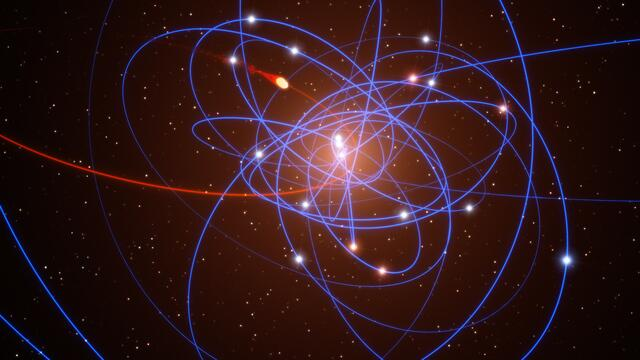
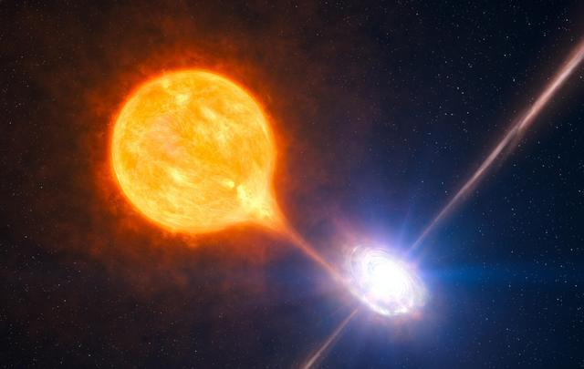
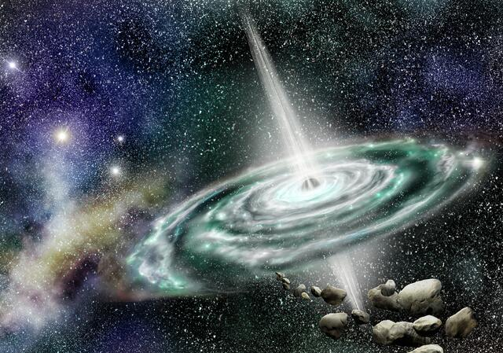
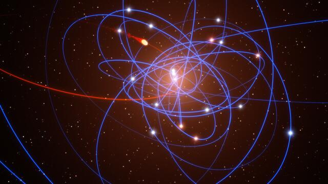
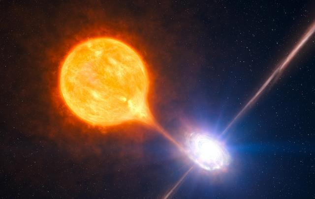
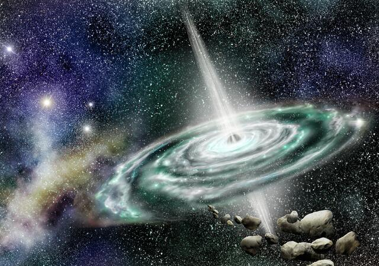

¿Qué son los agujeros negros?
Los agujeros negros son los restos fríos de antiguas estrellas, tan densas que ninguna partícula material, ni siquiera la luz, es capaz de escapar a su poderosa fuerza gravitatoria.
En el pasado los agujeros negros eran estrellas enormes. De hecho, se considera que tenian un tamaño de 10 o 15 veces más grandes que nuestro Sol. Cuando estas estrellas gigantes llegan a la última fase de su vida estallan en vastos sucesos conocidos como supernovas.
Los agujeros negros son cadáveres de estrellas gigantes. Cuando una estrella se queda sin combustible, colapsa hacia dentro. La gravedad lo atrae todo con una fuerza cada vez mayor, la temperatura alcanza cien mil millones de grados, los átomos se rompen, los electrones quedan destrozados, y todo se aplasta aún más.
Conoce los tipos de agujeros negros
Hasta hace no mucho tiempo se creia que solo habia un tipo de agujero negro en el universo. Sin embargo, gracias a los constantes avances tecnológicos y científicos, se ha descubierto que este hecho no es así. Se pueden establecer una serie de clasificaciones para enumerar estas peligrosas y monstruosas manifestaciones cósmicas.

los micro agujeros se especula que fueron creados en los inicios del Universo tal como hoy lo conocemos, aunque en realidad no se conoce su origen. Son de tamaños minúsculos, como un grano de arena de playa, pero con una masa similar a la de nuestro propio Sol.

el agujero estelar, también es una especulación. Este tipo habría sido provocado por la explosión de una estrella menor que una supergigante. Así pues, son de tamaño más reducido, incluso podríamos hablar de kilómetros de diámetro, aunque con masas superiores a la de nuestro propio Sol.

En este caso hablaríamos de los estertores de vida de una estrella supergigante, que ya ha pasado su estado de supernova, expulsando materia, quedando en su núcleo los elementos más pesados, precipitándose sobre sí mismos por la fuerza del campo gravitacional. Se estima que su tamaño puede ser similar al de la Tierra, aunque con una masa muy superior, hasta 100 veces la del Sol.
 el agujero supermasivo en este caso son objetos tan inmensamente grandes, se cree que pueden superar en tamaño al Sistema Solar, que no somos capaces de imaginar su envergadura. Las teorías dicen también que el centro de las galaxias podría ser una agujero negro supermasivo, lo que permite que la misma se mantenga unida.
el agujero supermasivo en este caso son objetos tan inmensamente grandes, se cree que pueden superar en tamaño al Sistema Solar, que no somos capaces de imaginar su envergadura. Las teorías dicen también que el centro de las galaxias podría ser una agujero negro supermasivo, lo que permite que la misma se mantenga unida.

los micro agujeros se especula que fueron creados en los inicios del Universo tal como hoy lo conocemos, aunque en realidad no se conoce su origen. Son de tamaños minúsculos, como un grano de arena de playa, pero con una masa similar a la de nuestro propio Sol.

el agujero estelar, también es una especulación. Este tipo habría sido provocado por la explosión de una estrella menor que una supergigante. Así pues, son de tamaño más reducido, incluso podríamos hablar de kilómetros de diámetro, aunque con masas superiores a la de nuestro propio Sol.

En este caso hablaríamos de los estertores de vida de una estrella supergigante, que ya ha pasado su estado de supernova, expulsando materia, quedando en su núcleo los elementos más pesados, precipitándose sobre sí mismos por la fuerza del campo gravitacional. Se estima que su tamaño puede ser similar al de la Tierra, aunque con una masa muy superior, hasta 100 veces la del Sol.
el agujero supermasivo en este caso son objetos tan inmensamente grandes, se cree que pueden superar en tamaño al Sistema Solar, que no somos capaces de imaginar su envergadura. Las teorías dicen también que el centro de las galaxias podría ser una agujero negro supermasivo, lo que permite que la misma se mantenga unida.